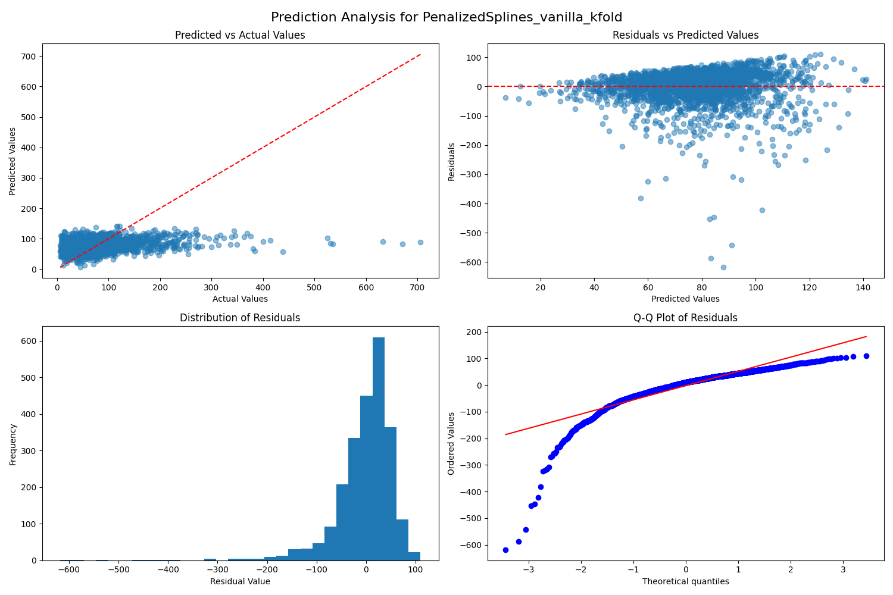
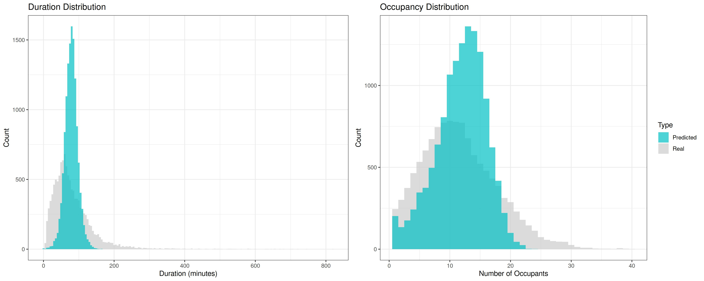
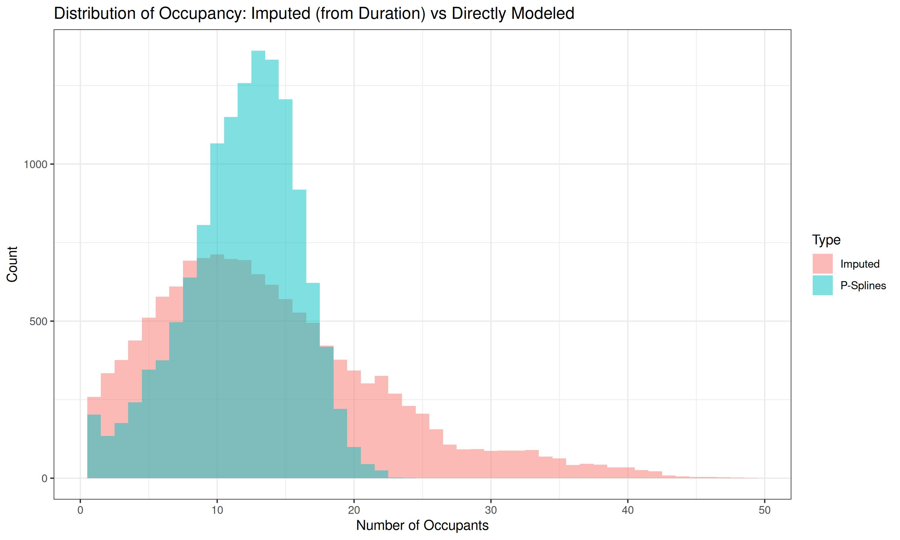

Evaluation
Best Model Configurations
Duration Model
|
Occupancy Model
|
For predicting the ‘Duration’ target variable, we implemented a Penalized Cubic Spline model with 15 knots. Despite extensive testing of various approaches, including feature interactions and compression techniques, the vanilla pipeline consistently outperformed more complex alternatives. Notably, temporal cross-validation showed no meaningful advantage over the random KFold method. After thorough hyperparameter optimization, we determined the optimal Ridge penalty to be 14.38.
Note: While this model achieved the lowest RMSE among all tested approaches, its low R² value of 0.059 indicates a significant limitation in explaining the variance in the response variable.
The ‘Occupancy’ prediction results proved more encouraging. Using another Penalized Cubic Spline model with 15 knots, we found that rolling cross-validation provided superior results compared to other methods. Through systematic tuning, we identified an optimal Ridge penalty of 29.76. The resulting R² value of 0.303, while modest, represents a meaningful improvement over the Duration model and suggests better capture of the underlying patterns in the data.
Model Diagnostics
Duration Model Performance
The diagnostic plots below visually evaluate the performance of the model in predicting the ‘Duration’ response variable. As noted earlier, the model struggles to explain the variance in the response. These plots compare actual and predicted values and provide insights into the residuals.
In the first scatter plot, the model’s predictions are cap-off just under roughly 150, leading to a horizontal cluster of points. This consistent underestimation of larger responses is further reflected in the residual histogram, which has an extended left tail, and the residual QQ plot, where many negative residuals deviate significantly below the normal reference line. Additionally, the residual plot reveals non-constant variance and a distinct pattern, indicating that the model fails to capture the true underlying structure of the data.

Summary: The duration prediction task proved particularly challenging, with models struggling to capture the full range of visit durations. The low R² value reflects the inherent complexity of predicting individual study session lengths. Our models consistently produced a compressed prediction range, systematically underestimating visits longer than 150 minutes while overestimating very short durations. This behavior suggests that additional features or alternative modeling approaches may be necessary to capture the full spectrum of study patterns.
Occupancy Model Performance
The Occupancy model diagnostics reveal more promising results. The scatter plots exhibit a distinct grid-like pattern due to the integer nature of both the response variable and the model’s predictions. Areas where multiple points share the same value appear as darker shades of blue in the scatter plots.
Consistent with the improved R² observed for this model, the diagnostic plots reflect a better overall fit compared to the Duration model. Although a slight pattern is still visible in the residual plot, it is evident that this model aligns more closely with the underlying data for this problem.

Summary: The occupancy prediction models demonstrated substantially better performance, particularly in capturing typical usage patterns. The models showed strongest accuracy in the modal range of 10-15 occupants, where most observations occur. While the overall distribution of predictions closely matched observed patterns, we observed minor discrepancies at the distribution tails, particularly during extremely busy or quiet periods. The superior R² value suggests that occupancy patterns follow more predictable trends than individual visit durations.
Distribution Analysis
Predicted vs. Actual Distributions
To further evaluate the predictive performance of our models, we overlaid the distribution of predicted values onto histograms of the actual values. These plots provide a clearer depiction of how well our predictions align with the actual data. In both cases, the models appear to consistently overshoot the bulk of the observations. We suspect this overestimation is driven by the presence of extreme high values in the dataset, which the models struggled to accurately predict.
This challenge likely contributes to the relatively high RMSE for our ‘Duration’ model. Large errors on these extreme values significantly inflate the RMSE, as it averages the squared differences across all predictions.

The distribution comparisons above reveal distinct patterns for each response variable. For Duration (left panel), the predicted distribution (blue) exhibits notably less spread than the actual values (gray), with a pronounced peak near the mean. This compression of the predicted range manifests in consistent underestimation of extreme durations, particularly evident in the model’s inability to capture values beyond 150 minutes. These limitations align with our earlier observations of the model’s low R² (0.059) and elevated RMSE (59.47).
The Occupancy predictions (right panel) show more promising results. The predicted distribution more faithfully reproduces the actual data’s shape, particularly in the modal range of 10-15 occupants. However, some discrepancies persist at the extremes, with slight underestimation of low occupancy values and incomplete capture of the upper range. These characteristics explain the moderate R² value of 0.303, suggesting our model captures meaningful but incomplete patterns in the occupancy data.
Comparison of Prediction Methods
The visualization below compares two distinct approaches to occupancy prediction: direct modeling using Penalized Splines and imputation based on Duration predictions. The imputation method estimates occupancy as a derived variable from Duration predictions, while our primary model targets occupancy directly through Penalized Splines optimization.
This comparison reveals notable distributional differences. The direct modeling approach (shown in blue) demonstrates superior alignment with actual occupancy patterns, particularly in capturing the characteristic peak at 10-15 occupants. In contrast, the imputed predictions (shown in red) produce a more diffuse distribution with extended tails, suggesting systematic overestimation of extreme occupancy values. We attribute this overestimation to error propagation from the underlying Duration predictions.
These results underscore a critical methodological insight: while imputation offers a practical alternative when direct measurements are unavailable, it introduces additional uncertainty compared to models trained explicitly on the target variable. The superior performance of our direct Penalized Splines approach validates our decision to prioritize dedicated occupancy modeling.

Technical Challenges and Insights
Our modeling process revealed several key technical challenges that influenced our approach and results:
Distribution Complexity
The underlying distributions of our target variables presented significant modeling challenges. Duration data exhibited strong right-skew characteristics, requiring careful consideration of transformation approaches. While log-normal transformations improved model training stability, they introduced complications in error interpretation on the original scale. The discrete nature of occupancy counts necessitated specialized handling, leading to our implementation of the RoundedRegressor wrapper to maintain prediction integrity.
Model Architecture Considerations
Our systematic evaluation of model architectures yielded an unexpected insight: the vanilla pipeline consistently outperformed more sophisticated approaches. This finding suggests that:
- The relationship between our features and targets may be more direct than initially hypothesized
- The additional complexity of interaction terms and dimensionality reduction might be introducing noise rather than capturing meaningful patterns
- The superior performance of simpler architectures indicates that careful feature engineering may be more valuable than architectural sophistication
Temporal Pattern Significance
The impact of temporal patterns emerged as a crucial factor, particularly in occupancy prediction. Rolling cross-validation consistently outperformed static approaches, suggesting that:
- Recent historical patterns carry strong predictive power
- The relationship between features and occupancy evolves over time
- Traditional k-fold validation may underestimate model performance in practical applications
These insights have shaped our recommendations for future work and system deployment.
Conclusions
Key Findings
Our analysis demonstrates that Penalized Cubic Spline models delivered the strongest performance for both Duration and Occupancy predictions. We are particularly satisfied with the Occupancy model’s capabilities and look forward to benchmarking it against our peers’ approaches.
Future Directions
This project’s scope was necessarily limited to the provided features. We believe incorporating external variables could substantially improve model performance. For instance, the timestamp data suggests an opportunity to integrate weather conditions, which likely influence Learning Commons usage patterns.
Additionally, while the models covered in this course offered valuable insights, alternative approaches such as tree-based methods or neural networks might better capture the complex non-linear relationships we observed. Given the clear temporal dependencies in our target variables, time series modeling presents another promising avenue for investigation.